STEP 01
들어가는 방법
메인 → 이달의 이슈(영업전략) → 10월 영업전략 카드를 누르면 두 개의 카드가 나옵니다. 위쪽 “2610 주요치료비통합보장”(신담보 시뮬레이터) 카드를 누르면 시뮬레이터가 전체 화면으로 열립니다.
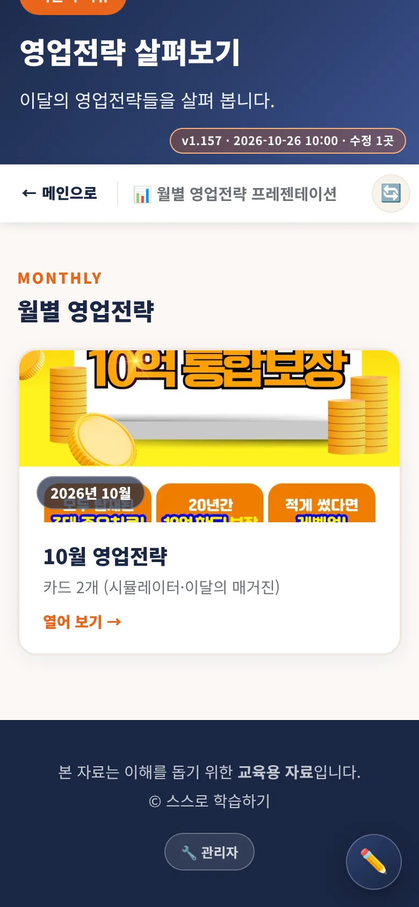
① 10월 영업전략 카드
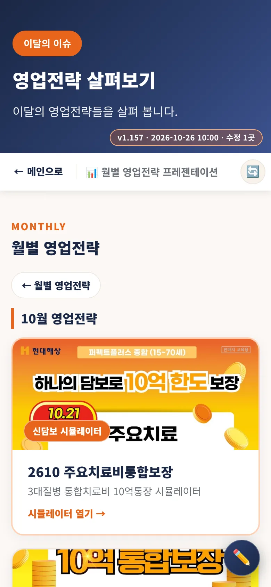
② 시뮬레이터 카드 누르기
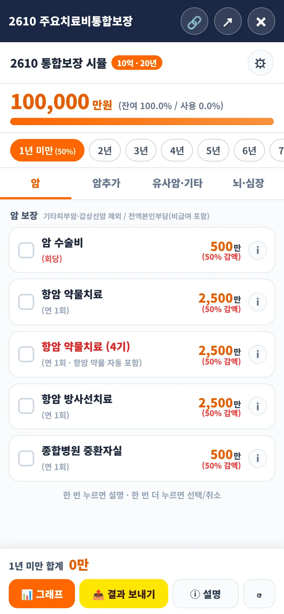
③ 시뮬레이터 첫 화면🔗 위쪽 바의 링크 복사 버튼을 누르면 단독 실행 링크(sim2610.html)가 복사됩니다. 카카오톡 등으로 보내면 받은 분은 시뮬레이터만 열어 볼 수 있습니다. ✕를 누르면 닫힙니다.
STEP 02
화면 구성
- 맨 위 : 한도·갱신 기간 태그(10억 · 20년)와 ⚙ 설정 버튼
- 통장 잔고 : 남은 금액(만 원)과 잔여·사용 비율, 막대 그래프
- 연차 줄 : 1년 미만 ~ 20년. 좌우로 밀어서 고릅니다.
- 탭 4개 : 암 / 암추가 / 유사암·기타 / 뇌·심장. 숫자 배지는 그 연차에서 선택한 개수입니다.
- 맨 아래(고정) : 그 연차의 합계, 📊 그래프 · 📤 결과 보내기 · ⓘ 설명 · ↺ 초기화
STEP 03
연차 고르기
연차 칩을 눌러 몇 년 차에 보험금을 받는 상황인지 고릅니다. 연차마다 따로 담보를 선택할 수 있고, 선택한 연차에는 점(•)이 찍힙니다.
- 1년 미만 : 암·뇌심 담보에 50% 감액이 적용되어 금액이 절반으로 표시됩니다.
- 10년 차 : 조건을 충족하면 레벨업(⬆)이 표시됩니다. (STEP 07)
STEP 04
담보 고르기 — 한 번 누르면 설명, 두 번 누르면 선택
- 한 번 누르기 : 그 줄에 점선 테두리가 생기고 설명 말풍선이 뜹니다. 아직 선택되지 않습니다.
- 같은 줄을 한 번 더 : 선택(✓)됩니다. 선택된 줄을 다시 두 번 누르면 취소됩니다.
- 다른 줄을 누르면 설명이 그 줄로 바뀌고, 빈 곳을 누르거나 스크롤하면 설명이 닫힙니다.
- 선택하면 위쪽 통장 잔고와 아래 합계가 바로 바뀝니다.
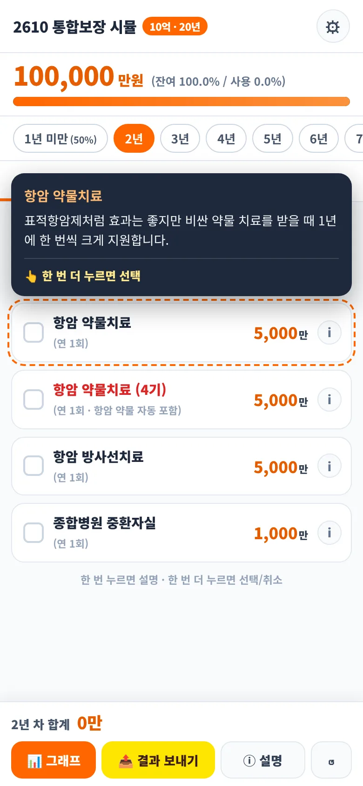
① 한 번 누름 → 설명
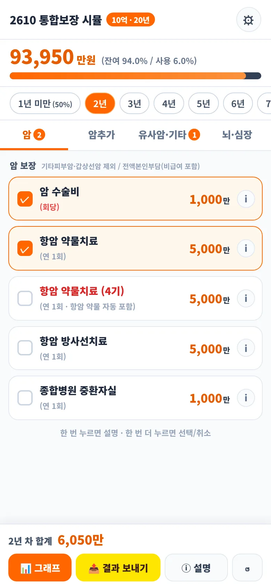
② 두 번 누름 → 선택됨STEP 05
자동으로 함께 선택되는 담보
| 선택하면 | 자동으로 함께 | 비고 |
|---|
| 항암 약물치료(4기) | 항암 약물치료 | 4기를 해제하기 전에는 항암 약물치료를 해제할 수 없습니다(안내창). |
| 혈전 용해 치료(B) | 중환자실 입원(A) | 혈전용해제 사용 환자의 98.9%가 중환자실에 입원 |
| 암 수술비(암·유사암) | 비급여 수술(상급) | 수술을 취소하면 함께 취소 |
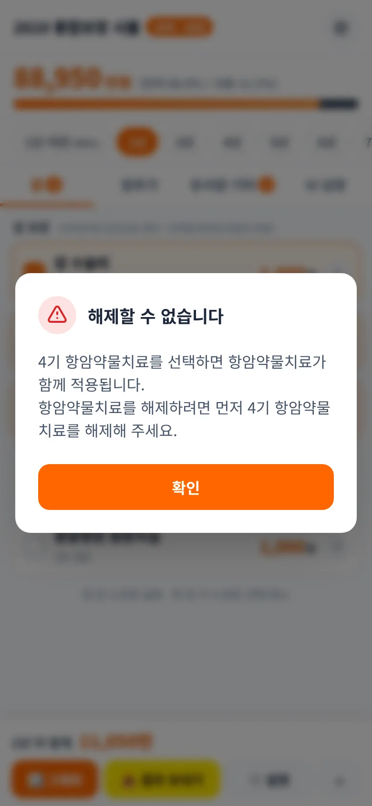
4기 선택 후 항암약물 해제 시도
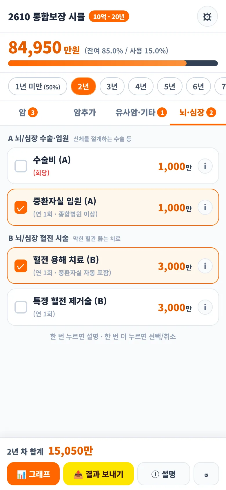
혈전 용해 → 중환자실 자동STEP 06
암추가보장(치료당) 특약
암추가 탭에서 맨 위 특약 가입 스위치를 켭니다. 그 뒤 암 탭에서 항암 약물·방사선을 선택하면 입력한 횟수만큼 치료당 금액이 함께 합산됩니다. (10억 20만 원, 5억 10만 원 / 1년 미만 50%)
- 주사제 / 주사제 외 중 하나만 선택합니다. 주사제는 보통 3주에 한 번, 연 17회 수준이며 − + 로 횟수를 바꿉니다.
- 주사제 외(경구투여제)는 연간 1회한이라 연 1회로만 계산합니다.
- 방사선은 주 5회 기준 약 30회가 기본값입니다. 암 탭의 방사선을 선택하면 자동으로 체크됩니다.
- 유사암(기/갑)은 유사암 탭의 약물·방사선을 선택했을 때 20% 단가로 자동 합산됩니다.
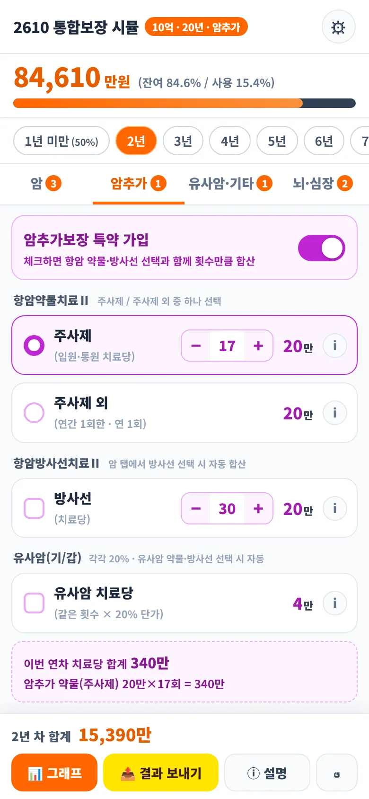
암추가 탭
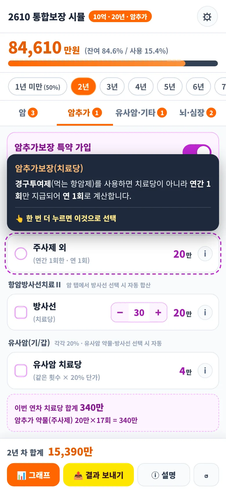
주사제 외 — 한 번 누르면 설명STEP 07
10년 차 이후 레벨업
- 조건 : 1~9년 차에 사용한 금액이 통장 한도의 10% 이하(10억 기준 1억 이하).
- 효과 : 10년 차 이후 일반 보장은 120%, 암추가보장(치료당)은 1,000%(10배)로 상향됩니다.
- 조건을 넘으면 레벨업이 적용되지 않고, 연차 칩에 ⬆ 표시도 사라집니다.
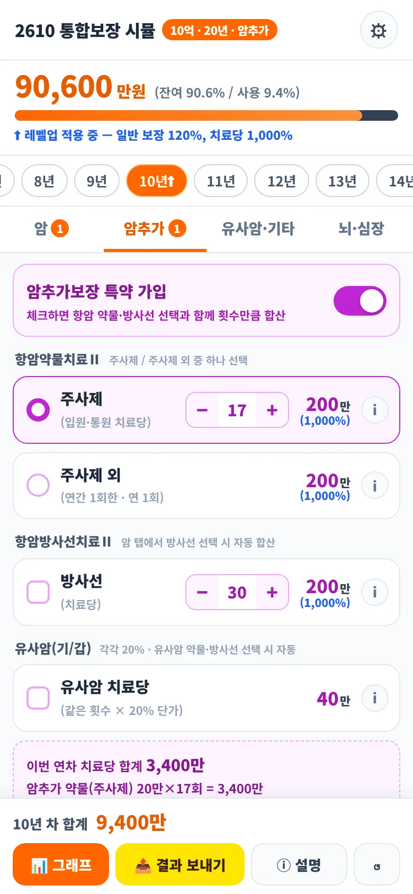
10년 차: 치료당 200만 원(1,000%)STEP 08
그래프·설명·설정
- 📊 그래프 : 연도별 합산 막대가 아래에서 올라옵니다. 막대를 한 번 누르면 내용, 한 번 더 누르면 삭제됩니다.
- ⓘ 설명 : 가입 직후 보장 제한(면책/감액)과 레벨업 상세 설명을 봅니다.
- ⚙ 설정 : 10억/5억 한도와 암추가보장 가입을 바꿉니다. 한도를 바꾸면 입력한 내용이 초기화됩니다.
- ↺ 초기화 : 모든 연차의 입력을 지웁니다.
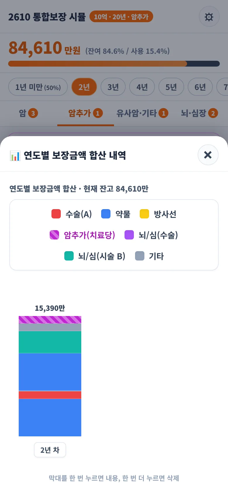
📊 그래프
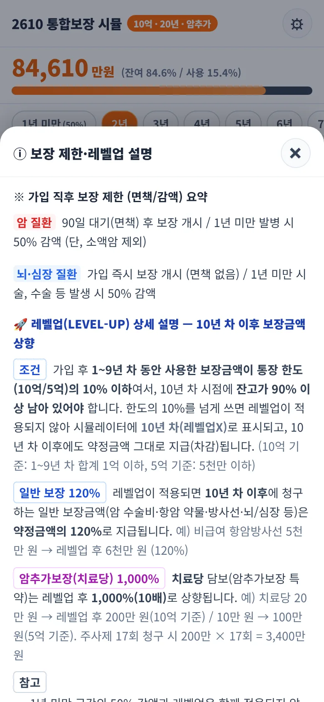
ⓘ 설명
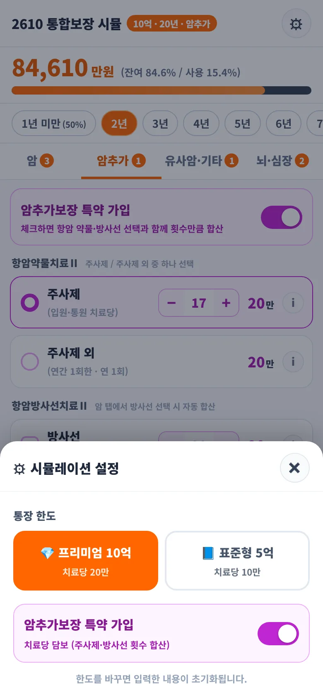
⚙ 설정STEP 09
결과 보내기
아래쪽 노란색 📤 결과 보내기를 누르면 연차별 막대와 항목별 설명 상자가 담긴 결과 그림이 만들어집니다.
- 💬 카톡으로 보내기 : 공유창이 열리면 카카오톡을 골라 보냅니다.
- 🖼 사진으로 저장 : 공유창에 카카오톡이 없거나 지원되지 않으면 갤러리에 저장한 뒤 카톡에서 사진으로 보내세요. 저장이 안 되면 그림을 길게 눌러 “사진에 저장”.
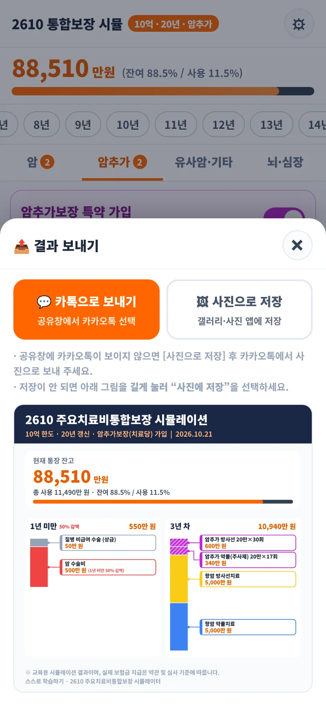
결과 보내기 창과 결과 그림FAQ
자주 묻는 질문
Q. 주사제 외는 왜 1회만 계산되나요?
약관상 주사제 외(먹는 항암제 등)는 연간 1회한이어서 횟수를 입력받지 않고 연 1회로 계산합니다.
Q. 10년 차인데 레벨업이 안 돼요.
1~9년 차 사용액이 한도의 10%를 넘었는지 확인하세요. 넘으면 레벨업이 적용되지 않습니다.
Q. 항암 약물치료가 해제되지 않아요.
4기 항암약물치료가 선택되어 있으면 함께 적용됩니다. 4기를 먼저 해제하세요.
Q. 담보를 눌러도 선택이 안 돼요.
한 번은 설명입니다. 같은 줄을 한 번 더 누르세요.
※ 유의사항
이 시뮬레이터는 교육용이며, 실제 보험금 지급은 약관과 심사 기준에 따릅니다. 비율·예시는 현대해상 퍼펙트플러스 통합보장 안내 자료 기준입니다.